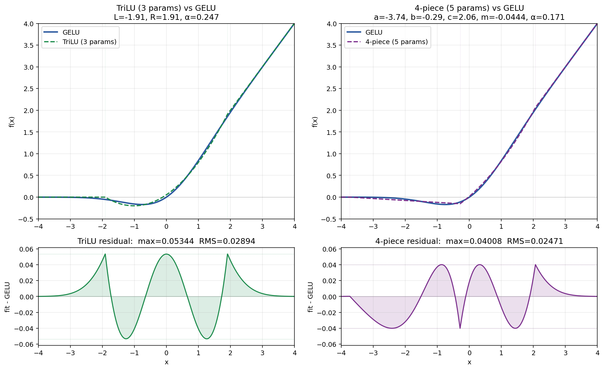
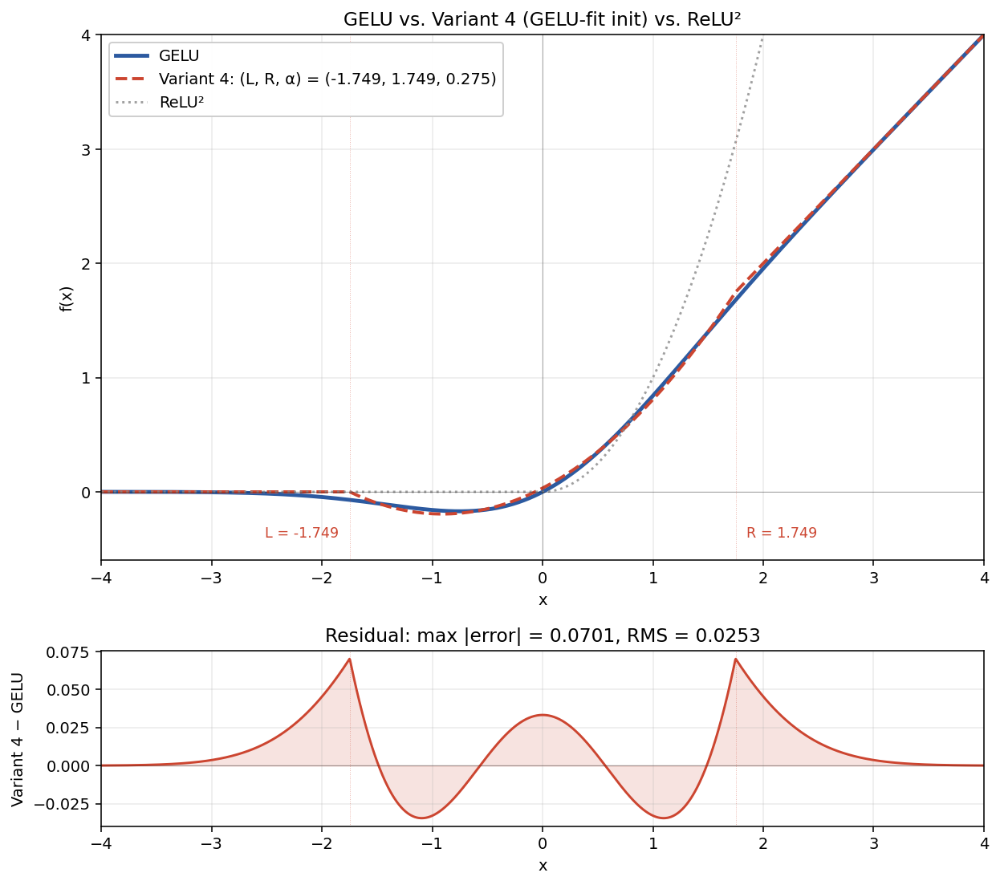
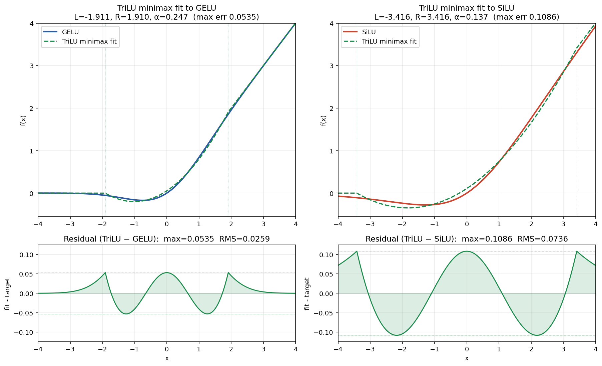
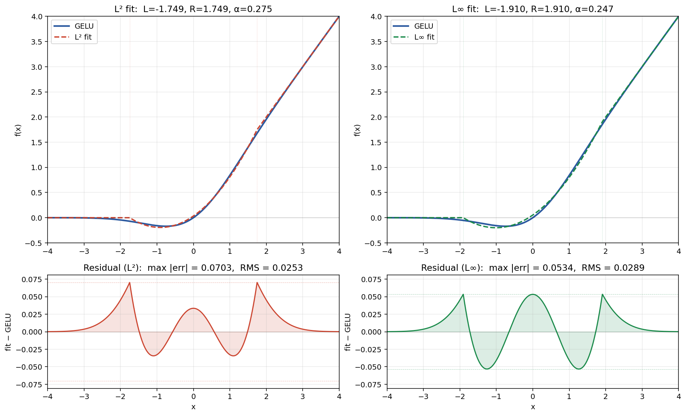

Working document. Private fork of KellerJordan/modded-nanogpt. Author: Adam Holmes.
The dual goal of competing on modded-nanogpt is (a) to learn modern LLM training engineering deeply, and (b) to produce a portfolio artifact strong enough to back a job search in AI/ML roles.
Both goals point at the same activity but bias the choice of what to do:
The honest signal hierarchy (approximate):
Conclusion: aim for tier 2–3. Don’t aim for “any record at any cost.” Aim for an experiment whose results are interesting whether or not they yield a record.
torch._inductor.config / torch.compile flags. Exception: coordinate_descent_tuning allowed on Medium.The objective is mathematical. From the README: “the goal is to obtain a probability model of language which assigns a probability of at least math.exp(-3.28 * 10485760) to the first 10,485,760 tokens of the FineWeb valset.” Any architecture producing a valid joint probability over those tokens is admissible.
What this allows:
num_layers, model_dim, num_heads, head_dimWhat this excludes:
No minimum speedup. A 5ms record is technically valid. But the discretionary rules cap how much code complexity is acceptable per ms (200 lines for 300ms: yes; 500 lines for 50ms: probably not), and protect the maintainer’s 0.001–0.002 loss buffer below the target so that validation runs remain cheap.
Official runs: 8 × H100 SXM5 on PrimeIntellect. Per-GPU: ~989 BF16 TFLOPs, ~1979 FP8 TFLOPs, 80 GB HBM3 at 3.35 TB/s, NVLink at ~900 GB/s. Aggregate: ~8 PFLOPs BF16 / ~16 PFLOPs FP8.
Current record: ~1.41 min on Track 1 (~84 s, ~1480 steps). Total training tokens: ~393 M (less than 1 epoch of the 10B FineWeb subset). The whole speedrun has been a data-efficiency competition: same val set, fewer tokens used.
Bottlenecks (from PR-level evidence and Akash’s “Profiling 101” writeup, linked at record #44):
Linear→ReLU²→Linear Triton kernel (record #59), FP8 matmul, mixed-precision Muon.The model body fits comfortably in HBM (~250 MB in BF16 for 125M params). The benchmark is not memory-capacity-bound, so techniques like layer-weight sharing (ALBERT-style) don’t help — they save params but not FLOPs.
| Stage | Fraction | seq_len | batch (tokens) | attn windows (blocks) | lr × |
|---|---|---|---|---|---|
| 1 | 1/3 | 896 | 131,072 | (1, 3) | 1.0 |
| 2 | 1/3 | 2048 | 262,144 | (3, 7) | 1.52 |
| 3 | 1/3 | 2048 | 393,216 | (5, 11) | 1.73 |
| extension | 40 steps | 2048 | 393,216 | (6, 13) | — |
Total: 1480 steps. Architecture: 11 layers (one fewer than nominal GPT-2 Small), 6 heads, head_dim 128, model_dim 768. Plus a bigram hash embedding (vocab × 5) and 5 value-embedding tables.
Useful for: code correctness, regression tests after refactors, scaled-down training to validate convergence, kernel correctness checks, profiling shapes. Not useful for: representative wallclock, multi-GPU code paths (NCCL, reduce_scatter, sharded Muon), full sequence length (64K via FlexAttention), full batch sizes. Workflow: iterate locally on a --nproc_per_node=1 scaled-down config → push to a single H100 for sanity check → only use 8×H100 PrimeIntellect for timing/significance.
GitHub does not support marking a fork of a public repo as private. Workaround: created a private repo aaholmes/nanogpt, mirror-pushed from upstream, added KellerJordan/modded-nanogpt as upstream remote. Sync via:
git fetch upstream
git merge upstream/master # from master, will be fast-forward
Optional — restrict upstream fetch to only master (avoid pulling all experimental upstream branches):
git config remote.upstream.fetch '+refs/heads/master:refs/remotes/upstream/master'
When ready to submit a record: create a public fork on GitHub, push the branch there, open PR.
origin remote URL in cleartext. That token must be rotated at github.com/settings/tokens. Going forward, use a credential helper instead of embedded tokens:
git remote set-url origin https://github.com/aaholmes/nanogpt.git
git config --global credential.helper osxkeychain
gh CLI (gh auth login). Prefer fine-grained PATs scoped to a single repo with minimal permissions.
| Track | Training time | + compile (cold) | Per-run cost @ ~$18/h | p<0.01 validation (~8–20 runs) |
|---|---|---|---|---|
| Small | ~1.4 min | ~5–7 min | ~$2–3 | ~$20–60 |
| Medium | ~17.4 min | ~5–7 min | ~$7–8 | ~$60–160 |
Exploration burns far more than validation. Budget realistically. For cheaper exploration: Lambda, RunPod, Vast.ai, Together, CoreWeave. Final timing/validation must be on PrimeIntellect to match the reference hardware.
| Track 1 (Small, ≤3.28) | Track 2 (Medium, ≤2.92) | |
|---|---|---|
| Current record | 1.406 min (record #80, Apr 8 2026) | 17.35 min (record #18, Dec 31 2025) |
| Records in last 6 months | ~27 (Jan–Apr 2026) | 0 |
| Per-run cost | $2–3 | $7–8 |
| Competitive pressure | Very high (many strong contributors, AI systems) | Low (most contributors focus on Small) |
| Open features | Tightly contested; sub-second wins | Roadmap explicitly published by bulk-transfer author |
coordinate_descent_tuning | Banned | Allowed but not yet used |
Key insight from records/track_2_medium/2025-12-31_BulkSmallTrackTransfer/README.md: the bulk-transfer author explicitly lists Medium-track features not yet integrated (Snoo, EMA wrapper, Smear-MTP, sharded mixed-precision Muon, cubic sliding window, Medium-specific logit scaling, coordinate_descent_tuning), and notes “the learning rate, weight decay, and schedules can be improved.” They did only 2 validation runs and said “this is well below the cutoff and can likely drop another 100 steps.”
Plus ~27 Track 1 records have shipped since 12/31/25 and none have been ported.
Implication: Track 2 is the higher-leverage starting point for a portfolio project. Lower competition, explicit roadmap, more headroom. Costs more per run but the slack is much larger. Track 1 should be reserved for narrow, high-conviction systems contributions.
Ranking criteria: (likely impact) × (probability of working) / (cost & complexity). Each idea is annotated with why it’s where it is. Phase-1 quality experiments at reduced scale on the local 5060 Ti are essentially free; rankings reflect total cost-to-conclusion including phase 2 (single H100) and phase 3 (8×H100 validation).
| # | Idea | Why it ranks here |
|---|---|---|
| A1 | TriLU activation experiment (see Section 7). | Three-piece piecewise polynomial activation (zero, quadratic, identity) with 2–3 learnable parameters per layer. Tracks GELU within ~0.05 max error at near-ReLU² cost. Cleanest possible test of the hypothesis that ReLU² won this codebase on cost, not shape. Deploy Track 1 first (cheaper iteration, stronger validation), then Track 2 (paired with A2). Plausibly clears records on both. Phase 1 essentially free (local single-GPU); Track 1 validation ~$20–60; Track 2 validation ~$60–160. |
| A2 | Enable coordinate_descent_tuning on Track 2. |
Explicitly allowed in the rules but never tried. The bulk-transfer author flagged it: “Presumably this is helpful. I didn’t notice this flag until I did the two runs.” Near-zero engineering work; might itself clear a record. Bundles naturally with A1’s Track 2 phase but also viable standalone if A1 doesn’t pan out on Track 1. |
| A3 | Systematic Track 1 → Track 2 port study. | The bulk-transfer author wrote: “I have no scaling intuition yet.” The empirical question “which speedrun tricks transfer from 125M to 350M, and which don’t” is unanswered and publishable with or without a record. Strong learning value and the most natural portfolio centerpiece. Combine: port unported features, retune schedules, ablate. Same co-tuning caveat as A1: a Track 1 feature dropped into Track 2 with no retuning is testing the feature at Track-1-tuned settings, not at its Track-2-optimal settings. The bulk-transfer author acknowledged this: “schedules can be improved.” Each ported feature should be evaluated both at the existing schedule AND with a brief co-tune of the most-coupled parameters (LR, init scale, schedule timing). Negative results from drop-in comparisons aren’t conclusive without this. |
| A4 | Schedule retune at Medium scale. | The bulk-transfer used “first guesses” for LR, WD, cooldown frac, batch-size ramp. Sweeps at small N can be done cheaply (1 H100). Likely to compose with A2 and A3. |
| # | Idea | Why it ranks here |
|---|---|---|
| B1 | Gated MLP variants (SwiGLU, GeGLU, TriGLU). | Standard in Llama, Mistral, and most modern open LLMs — conspicuously absent from modded-nanogpt. Phase 1 now includes them in the default 6-variant sweep at no marginal cost, so the quality-comparison data is free. Phase 2 (fused gated-MLP kernel) is what becomes a Tier-B effort if Phase 1 shows gating helps. 2–3 days of kernel work but likely lasting impact. |
| B2 | Port specific Track 1 records to Track 2 one-by-one. | Candidates (in approximate descending value):
|
| B3 | Snoo & EMA optimizer wrappers (Track 2-specific records #12–14). | Already proven on Medium pre-bulk-transfer, but the post-bulk codebase doesn’t have them. Reintegration + retuning should yield record. Modest engineering; algorithmic risk is low. |
| B4 | 4-bit LM head with trainable per-output-token FP16 scales. | The LM head (768 × 50304) is currently FP8 (records #19, #67). Going to 4-bit weights paired with trainable per-row FP16 scales (one scalar per vocab token) potentially halves HBM bandwidth on the bandwidth-bound LM-head weight read while preserving precision via the per-token scales (standard pattern in GPTQ / AWQ / SmoothQuant, but applied at training time rather than post-hoc).
Mechanism: 4-bit weight matrix (16 discrete values per element) × 16-bit per-row trainable scale = high effective precision per output token, since each row can be calibrated to its characteristic logit range. Differentiable end-to-end via straight-through estimator on the quantization step; the scales themselves train cleanly. Estimated win: ~3–5% step wallclock if quality parity holds. Engineering effort: ~1–2 weeks for a custom INT4×BF16 fused kernel (reference implementations exist in Marlin, AWQ, vLLM’s INT4). Must integrate with existing softcap + asymmetric rescale + MTP CE fusion already present in the LM-head pipeline. Plausibly novel as a training-time application; tier-B leverage if TriLU’s Phase 1 establishes the activation experiment as worthwhile to pursue further. |
| B5 | 4-bit weights with per-row FP16 scales for gated MLP W₂ (gate matrix). Conditional on Phase 1 establishing gated MLPs (SwiGLU/GeGLU/TriGLU/xglu) as competitive. | Same quantization pattern as B4, applied to the gate matrix in a gated MLP block. Each layer’s W₂ is 768 × 2048 (under the (8/3)d hidden-dim convention); going to 4-bit with per-row FP16 scales reduces W₂ memory by ~87% and bandwidth on the weight read by ~75% vs BF16 / ~50% vs FP8.
Why this works for gates specifically: gates in trained networks tend toward near-binary per-channel "on/off" decisions, so 16 discrete values per element + per-output-channel scales preserves the relevant decision boundaries while drastically reducing weight memory. AWQ / SmoothQuant routinely quantize gate matrices to 4-bit at inference without quality loss. Estimated win: gate matmul ~30–50% faster → ~10–15% of MLP time → ~3–5% step wallclock. Engineering effort similar to B4 (~1–2 weeks). Could extend to W₁ (activation matrix) and W₃ (output matrix) for additive savings, though those have less binary-like behavior and may show more quality sensitivity. Dependency chain: Phase 1 must first show gated MLPs viable. If Phase 1 ranks ReLU² / TriLU above SwiGLU / GeGLU / TriGLU, this idea is moot for modded-nanogpt. |
| # | Idea | Why it ranks here |
|---|---|---|
| C1 | Sharded mixed-precision Muon (from Medium record 7). | Was on the original Medium track, dropped in bulk transfer. Brings back a significant win, but reimplementation against the current code structure is non-trivial. |
| C2 | Cubic sliding-window schedule (from Medium record 8). | The bulk-transfer used a guess. FA3 needs to compile each window size, so the schedule needs to balance compile overhead against the curve. Phase-1 testable. |
| C3 | Medium-specific logit-scaling formula. | Was tuned for Medium pre-bulk; current code uses Small’s. Cheap to study, modest payoff. |
| C4 | Activation/init/softcap co-tuning. Promoted to Phase 1.5 of A1 — see Section 7. | The interesting frontier in activations isn’t the activation alone — it’s coordinated retuning of init scales, softcap value, FP8 quant scales around the activation. This is no longer "speculative tier C" but a necessary step in any honest TriLU comparison. The current modded-nanogpt hyperparameters (especially init std and softcap) are tuned around ReLU²’s σ⁴ variance scaling; TriLU’s bounded slope likely tolerates different settings. |
| C5 | Margin-style auxiliary loss (∑i max(0, -logit_true + logit_i + threshold)). |
Hinge-style margin loss as an auxiliary term to CE. Used heavily in face recognition / contrastive learning, rare in LM training because CE already does soft margin work. Cheap to test (just add the term with a small weight); high risk of being neutral or harmful if it distorts the loss landscape away from val-CE minimization. Worth ~1 hour of code to try, not worth ~$50 of validation budget unless Phase 1 motivates it. |
| C6 | Trainable temperature (standalone, without 4-bit weights). | A learnable scalar τ or per-vocab vector applied as logits / τ. Not redundant with softcap (different operation: linear division vs nonlinear tanh saturation). But without 4-bit weight precision pressure, the temperature’s effect is largely absorbable by the LM-head weight matrix itself, so the marginal gain is small. Real value only emerges paired with low-precision weights (see B4). |
| C7 | Compressed gate input (pooled or truncated, for W₂ in gated MLPs). | Reduce the gate input dimension before the W₂ matmul. Two variants in increasing risk-and-savings order:
(a) Naive truncation: gate sees only first d/k channels of input. W₂ becomes (d/k) × 2048. Saves k× on params and FLOPs, but hostage to whichever channels happen to carry important signal.
(b) Cheap pooling (recommended): group input channels into d/k groups, apply mean/max/L2 pooling within each group, then feed the pooled d/k-dim vector to W₂. Same gate matmul cost as (a), but the gate sees a compressed summary of all input channels rather than just a fraction. The pooling itself is essentially free (~0.3% overhead vs the gate matmul). This is structurally the Squeeze-and-Excitation pattern (Hu et al. 2018), which is proven to work in vision — SE blocks use global average pooling before a small MLP to compute per-channel attention scores.
Estimated savings at k=10:
Quality risk grows with k. At k=2 (half-input), risk is mild — gates still see substantial input info. At k=10, the gate is making decisions based on a 10×-compressed summary; quality can collapse if gate decisions need fine-grained per-channel info. Sweep k ∈ {2, 4, 8, 16} with pooled variant to find the threshold.
Pooling choice: max preserves dominant features per group; mean preserves overall magnitude; mean+max concat doubles gate input dim but preserves both. Fixed pooling (not learned) is the right choice if compute reduction is the goal — a learned d → d/k projection just moves the parameters elsewhere via low-rank decomposition.
Dependency: same as B5 — conditional on Phase 1 establishing gated MLPs as viable. |
| # | Idea | Why it ranks here |
|---|---|---|
| D1 | Mamba/SSM/RWKV replacement architecture. | Allowed by rules but must beat the transformer + Muon + FP8 + FA3 + sliding-window stack on wallclock to 3.28 (or 2.92) loss in <1.5 min (or <17 min). No exotic architecture has done this yet despite years of trying. BlinkDL’s RWKV fork exists but isn’t on the leaderboard. Research-grade project. |
| D2 | Diffusion-based language model. | Must produce a tight ELBO-derived lower bound on log P(x) ≤ target, with total inference + training cost beating the AR baseline. Both halves are open research problems. Not a starting project. |
| D3 | Layer-weight sharing (ALBERT/Universal Transformer style). | Saves parameter count but not FLOPs. Model already fits in HBM; param count isn’t the bottleneck. Empirically has not won at this scale in modern LLM literature. |
| D4 | Mixture-of-Depths / early-exit. | Saves FLOPs proportional to skip rate. Conceptually appealing but very hard to make wallclock-positive at 125M scale (overhead of routing kills savings). Could be promising at Medium. |
| D5 | Test-time training / parameter nudging during eval. | Already proposed (@samacqua, PR #205) and explicitly disallowed: “we are not allowing untimed backward passes.” If you do it, the backward passes count toward wallclock — almost certainly net negative on this benchmark. |
train_gpt.py and train_gpt_medium.py end to end. Walk through the last 10 record PRs. Sketch a tensor-shape diagram of one forward pass. No GPU spend.Linear→TriLU→Linear kernel. If Phase 1 / Phase 1.5 showed gating dominates, the kernel work pivots to a fused gated-MLP. In parallel: open a Track 2 discussion thread; start preparing the Track 2 schedule retune (A4) and coordinate_descent_tuning harness (A2).Total realistic budget for one record attempt (validation included): $300–800 if you stay disciplined; $1500+ if exploration drags. Single-H100 sweeps (Lambda/RunPod) are 5–10× cheaper than 8×H100 PrimeIntellect for the same wallclock and should be used aggressively for everything except final timing.
TriLU (Three-piece Linear Unit) is a piecewise polynomial activation function with three regions: zero, quadratic, identity. Continuous (C°), with the transitions to the flat and linear pieces happening at learnable breakpoints. The general form has three parameters:
┌ 0 if x ≤ L
TriLU(x;L,R,α) = ┤ α(x−L)(x−R) + R(x−L)/(R−L) if L < x < R
└ x if x ≥ R
Equivalent to αx² + βx + γ in the middle, with β = R/(R−L) − α(L+R) and γ = αLR − LR/(R−L).
Two named special cases used in this plan:
L = −a, R = +a, curvature renamed κ. Two parameters per layer.L, R, α.Useful limits:
α = 0: piecewise linear — the “ramp-on” activationα = 1/(4a) in the symmetric case: recovers the C¹ Huber smooth-ReLUα > 1/(4a): GELU-like underbite (middle quadratic dips slightly negative before re-entering zero)L ≈ −1.91, R ≈ +1.91, α ≈ 0.247ReLU² (max(0, x)²) has held the activation slot in modded-nanogpt since October 2024 (record #5). Properties:
Linear→ReLU²→Linear)xThe unboundedness is a real concern: it’s the kind of thing that forces careful init scaling, logit softcap, and FP8 dynamic-range management in the rest of the codebase. A bounded-slope alternative could in principle simplify the surrounding scaffolding (and pair well with C4 above).
TriLU cost vs ReLU²: ~4–5 ops/element vs 2 (two extra compares for the asymmetric form, one extra multiply, one extra add). Parameter count: 2 per layer (symmetric) or 3 per layer (asymmetric), optionally per-channel. All negligible.
Soft-positivity for the breakpoint magnitudes:
# symmetric TriLU
a = F.softplus(theta_a) + eps # transition half-width > 0
kappa = F.softplus(theta_k) # curvature ≥ 0
# asymmetric TriLU
L = -F.softplus(theta_L) - eps # left breakpoint < 0
R = F.softplus(theta_R) + eps # right breakpoint > 0
alpha = F.softplus(theta_a) # curvature ≥ 0
Initialize at the minimax-fit GELU values (see initialization options below) and let the optimizer drift. Per-layer learnable scalars by default; consider per-channel as a follow-up if per-layer shows meaningful inter-layer variation.
Use a separate, smaller learning rate for the activation parameters — typically 0.1× the main LR. This is standard practice for scalar learned parameters (layer-norm scales, learned positional embeddings, log-variance in VAEs, etc.) and prevents the activation shape from being jerked around by the optimizer chasing weight updates.
Distinct from activation parameter initialization: this is about how the MLP weights W₁, W₂ are drawn.
Standard practice for various activations:
| Activation | Standard init | Gain | Notes |
|---|---|---|---|
| ReLU | Kaiming / He | √2 ≈ 1.414 | std = √(2/fan_in); compensates for ReLU zeroing half the inputs |
| GELU | Kaiming-like | ~√2 | Effectively same as ReLU; smooth tail has small variance effect |
| Tanh / Sigmoid | Xavier / Glorot | 1 (or 5/3 for tanh) | std = √(1/fan_in) |
| ReLU² | No closed-form standard | n/a | Output variance scales as σ⁴ not σ², so Kaiming-style variance analysis breaks. Codebases typically rely on normalization + softcap + zero-init projections to control scales. |
| TriLU at GELU-fit init | Same as GELU (Kaiming, gain √2) | √2 | The function tracks GELU within ±0.05; variance analysis follows GELU’s. |
The codebase’s actual init: std = 0.5 × model_dim-0.5 (see train_gpt.py:1205), which is smaller than vanilla Kaiming. The modded-nanogpt init has co-evolved with ReLU² + softcap + zero-init residual projections + various scaling banks. The init isn’t load-bearing on the activation choice alone — it’s load-bearing on the surrounding scaffolding.
Recommendation for TriLU Phase 1: keep the existing codebase init unchanged. Don’t change two things at once. After Phase 1 establishes TriLU’s viability, run a small init sweep in Phase 2:
0.5 × model_dim-0.5 (current codebase value)√2 × model_dim-0.5 (vanilla Kaiming for GELU)0.7 × model_dim-0.5 (split the difference)This is part of the Tier C4 “co-tuning” angle: if TriLU’s GELU-like shape rewards a different init than ReLU²’s unbounded shape did, that’s where the extra leverage lives.
Run all variants at reduced scale on a single local GPU. Same hyperparameters, same init scheme (modulo activation), 3 seeds per variant. Default config: 6 layers, model_dim 384, seq_len 1024, batch 16, 1000 steps. Per-run: ~40 min on RTX 5060 Ti. Implemented in experiments/trilu/phase1.py.
The default sweep is designed as a 2×3 ablation over {standard MLP, gated MLP} × {ReLU-like, GELU-like, TriLU}:
| Standard MLP (2 matmuls, hidden = 4d) | Gated MLP (3 matmuls, hidden = (8/3)d) | |
|---|---|---|
| ReLU-like | ReLU² (baseline) | — (SwiGLU below replaces this slot) |
| GELU-like | GELU (control) | GeGLU |
| TriLU | TriLU (frozen at GELU-fit, primary) | TriGLU (frozen at GELU-fit, primary) |
| SiLU-like | — | SwiGLU |
So the 6 default variants are: relu2, gelu, trilu_asym, swiglu, geglu, triglu. The recommended setup runs TriLU and TriGLU with parameters frozen at the minimax GELU-fit values (see “Frozen vs learnable TriLU” below). In the harness this is achieved by setting requires_grad=False on the theta_* parameters of the TriLU modules; the default learnable variant is a useful secondary test but not the primary hypothesis test. This answers, in a single sweep:
6 variants × 3 seeds × ~40 min = ~12 hr total on RTX 5060 Ti.
SwiGLU (SiLU in a gated MLP) is the standard activation/MLP combo in modern open LLMs (Llama, Mistral, Qwen, DeepSeek). It is conspicuously absent from modded-nanogpt — ReLU² in a non-gated MLP has held since record #5 (Oct 2024). The gated form’s formula:
GatedMLP(x) = W₂ · ( act(W₁·x) ⊙ (V·x) )
The element-wise multiplication (gating) lets one channel modulate another — multiplicative interactions that pure pointwise activations can’t express. To keep param count matched, gated variants use hidden dim (8/3)d instead of 4d: three matrices of size d × (8/3)d = same 8d² as two matrices of size d × 4d.
TriGLU — TriLU inside the gated MLP structure — composes the two hypotheses (bounded GELU-shape activation, multiplicative gating). It is genuinely interesting only if TriLU’s learnable parameters contribute meaningfully beyond “approximating GELU”: if Phase 1’s trajectory plots show (L, R, α) drifting to layer-dependent values, that’s evidence the learnable shape matters and TriGLU is the natural Phase 3 follow-up. If trained parameters stay near the GELU-fit init, TriGLU ≈ GeGLU ≈ SwiGLU.
The cleanest variant is frozen TriLU at the minimax GELU-fit values — (L, R, α) initialized at (−1.910, +1.910, 0.247) and never updated. Zero learnable activation parameters.
Why: every existing activation in modded-nanogpt is fixed (ReLU², GELU, SiLU all have no params). A like-for-like test of “GELU-shape vs ReLU²-shape at near-equal cost” should also have no learnable params, otherwise any win is confounded between “the shape itself” and “the network found a better shape via the learnable knobs.”
The full TriLU progression for Phase 1, in order of increasing flexibility:
| Variant | Learnable params | What it tests |
|---|---|---|
| Frozen TriLU at minimax (recommended primary) | 0 | Pure shape comparison: does GELU's shape beat ReLU²'s shape at near-equal cost? |
| Learnable symmetric TriLU | 2 per layer (a, κ) | Does the network want to drift slightly from GELU? |
| Learnable asymmetric TriLU | 3 per layer (L, R, α) | Does the network want asymmetric breakpoints? |
Practical order: run frozen first. If it beats ReLU², hypothesis confirmed cleanly — proceed to Phase 2 with the frozen variant as the actual candidate. The learnable variants then become follow-up refinements, not primary tests. (If trained (L, R, α) drift to layer-dependent values, that’s an interesting secondary finding; if they stay near init, the simpler frozen variant was the right choice anyway.)
Useful if Phase 1 results are ambiguous:
κ = 1/(4a)) — tests whether curvature beyond smoothness mattersmax(0,x)² + α·min(0,x)·|x| with learnable α — cheap negative-side variantA natural generalization: a 4-piece function with an explicit linear underbite segment between the zero and quadratic regions:
┌ 0 if x ≤ a
4piece(x) = │ m(x − a) if a < x < b (linear, slope m, anchored at (a, 0))
│ αx² + βx + γ if b < x < c (quadratic, C° to neighbors)
└ x if x ≥ c
5 learnable parameters: a, b, c, m, α. With m < 0 this models GELU's negative-side underbite explicitly.
Minimax GELU fit (with a ∈ [−20, −0.1]; converges to a ≈ −3.74, well off the boundary):
| Function | Params | Max abs error to GELU | RMS error |
|---|---|---|---|
| TriLU (asymmetric) | 3 | 0.0534 | 0.0289 |
| 4-piece | 5 | 0.0401 | 0.0247 |
| Improvement | +2 params | −25% | −14% |
4-piece best-fit params: a = −3.74, b = −0.29, c = +2.06, m = −0.044, α = 0.171. Equi-oscillation residuals at 6 alternating extrema of magnitude ≈0.040, confirming minimax-optimality.

Why we’re deferring this:
κ = 0.247 > 1/(4×1.91) = 0.131 is in the underbite regime — the quadratic dips below zero (min ≈ −0.20 at x ≈ −1.01). It's not a great underbite fit (GELU's true min is −0.170 at x ≈ −0.752), but it's nonzero, and the 4-piece's explicit linear segment doesn't dramatically improve underbite-region fidelity either.When to revisit: if Phase 1 TriLU trajectory plots show the network wanting a deeper or differently-positioned underbite than TriLU can produce, the 4-piece becomes a natural follow-up. Until that signal exists, the added complexity isn’t justified.
The right framing isn’t “TriLU vs. symmetric TriLU.” The right framing is TriLU (or symmetric TriLU) initialized to approximate GELU vs. ReLU².
(L = −1.91, R = +1.91, α = 0.247) tracks GELU within max error 0.053 / RMS 0.029.For context: recent Track 1 records improve by 50–200 ms out of ~85 seconds, i.e. 0.1–0.25% per record. So a 1–2% net win would be a large record by current standards. But the margin is tight enough that:
Visual comparison vs ReLU²:

TriLU at GELU-fit init tracks GELU within ±0.07 across [−4, 4] (this plot shows the L² fit; the minimax fit reduces max error to 0.053). ReLU² has no negative-side dip and grows quadratically rather than linearly — RMS error to GELU is ~140× larger than TriLU’s.
The L² (and minimax) best fit of TriLU to GELU is exactly symmetric (L = −R). The reason: GELU satisfies GELU(0) = 0 with slope 1/2 at the origin; when L = −R in the TriLU family, the linear coefficient β is forced to exactly 1/2, so any best-fit through (0, 0) with slope 1/2 lands symmetric.
So for the GELU-init starting point, asymmetric TriLU and symmetric TriLU are equivalent. The asymmetric form’s extra degree of freedom matters only if the network drifts to asymmetric breakpoints during training. Run both as separate experiments — if TriLU’s trained (L, R) stay symmetric, symmetric TriLU was sufficient; if not, the third parameter pays for itself.
SwiGLU (SiLU in a gated MLP) is the modern LLM standard, so a reasonable question is whether TriLU should target SiLU instead of GELU. The numerical answer settles this: TriLU is structurally a GELU approximator, not a SiLU approximator.
| Target | Best TriLU params (minimax) | Max abs error | RMS error |
|---|---|---|---|
| GELU | L=−1.91, R=1.91, α=0.247 | 0.054 | 0.026 |
| SiLU / Swish | L=−3.42, R=3.42, α=0.137 | 0.109 | 0.074 |
TriLU fits SiLU about 2× worse on max error, 3× worse on RMS. Structural reason: SiLU has a deeper, wider underbite (min ≈−0.28 at x=−1.28) vs GELU's milder underbite (min ≈−0.17 at x=−0.75). TriLU's quadratic middle has to stretch its breakpoints out to ±3.42 to span the SiLU underbite region, and the resulting fit can't track SiLU through that underbite without large residuals.

Implication for the experiment design:
The historical context also favors GELU: it's the activation that ReLU² actually replaced in this codebase (record #5, Oct 2024). The cleanest hypothesis test is the direct historical question.
a = 1.910, κ = 0.247; TriLU at L = −1.910, R = +1.910, α = 0.247. Minimizes worst-case deviation from GELU: max abs error 0.053, RMS error 0.029.a = 1.749, κ = 0.275; TriLU at L = −1.749, R = +1.749, α = 0.275. Lower RMS (0.025) but higher worst-case (0.070).a = 1, κ = 0.25; TriLU at L = −1, R = 1, α = 0.25. Starts at the smooth (no-kink) point.a (e.g. 0.1), TriLU at small R−L. Starts close to ReLU with a narrow smoothing region.Use the minimax-fit init by default. For function approximation, L² (RMS) is the wrong objective — its statistical justification (MLE under Gaussian noise) doesn’t apply when fitting a deterministic target. Minimax (Chebyshev) is the classical choice and bounds the worst-case deviation at any single x, which is the operationally relevant quantity for an activation function. The minimax fit reduces worst-case error by 24% relative to the L² fit, with the residual showing perfect equi-oscillation at 5 alternating extrema of magnitude ≈0.053.
Visual comparison of L² vs L∞ fits:

Track (a, κ) or (L, R, α) trajectories over training to see what the network “wants.”
Metrics:
(L, R, α) or (a, κ) trajectory over training, per layer (for TriLU and TriGLU)Diagnostic interpretation:
κ stays near 1/(4a) (the C¹ point) across all layers → smoothness mattered more than curvature. C¹ smooth-ReLU would have sufficed.κ > 1/(4a) consistently → network wants GELU-like underbite; investigate whether standard GELU/SiLU is comparable.κ < 1/(4a) → piecewise-linear regime (slopes (0, ½, 1)) is preferred; simpler alternative exists.(L, R) stay symmetric (L ≈ −R) → symmetric TriLU was sufficient; the third parameter is redundant.(L, R) diverge (L ≠ −R) → asymmetry matters; the third parameter pays for itself.(L, R, α) → per-layer activations are publishable irrespective of record.0.5/√d, logit softcap, specific Muon LR, certain gate inits) was co-tuned around ReLU²’s shape and unboundedness. Dropping TriLU in with all of these unchanged measures "TriLU at ReLU²-tuned settings," not "TriLU at its best."
This is a known problem in ML benchmark methodology — hyperparameter coupling. The classical demonstration is “Bag of Tricks for Image Classification” (He et al. 2019) which showed that the apparent ranking of architectures often changes dramatically when each gets its own tuned hyperparameters.
Strongly-coupled hyperparameters to retune for TriLU:
| Hyperparameter | Current (ReLU²-tuned) | TriLU sweep range | Why it’s coupled |
|---|---|---|---|
| Init std (linear layers) | 0.5 × model_dim-0.5 | {0.5, 0.7, 1.0, 1.4} × model_dim-0.5 | ReLU² has σ⁴ variance scaling forcing a small init; TriLU has bounded slope so larger init may work. Vanilla Kaiming would be √2/√d. |
| Logit softcap value | 15 | {15, 30, ∞ (disabled)} | Softcap was designed to bound ReLU²’s unbounded growth. TriLU is bounded by construction; softcap may be unnecessary or differently-valued. |
| Muon LR | current value | {0.7, 1.0, 1.3} × current | Different activation magnitudes need different LRs to stay in the productive regime. Typical sensitivity: 20–30%. |
| Optional: Adam LR (biases, lambdas) | current value | {0.7, 1.0, 1.3} × current | Same reasoning, smaller effect. |
What to hold constant: zero-init projections (this is structural, not activation-specific), gate inits, batch size schedule, sliding window schedule, attention parameters. These aren’t strongly coupled to activation choice.
Sweep design (smart, not exhaustive):
Output: a "TriLU-tuned hyperparameter set" to use in Phase 3 validation. The fair comparison in the eventual PR is then (ReLU² at its tuned setup) vs (TriLU at its tuned setup), not the naive drop-in.
Three possible Phase 1.5 outcomes:
For TriLU variants that beat or tie ReLU² in Phase 1, write a fused Linear→TriLU→Linear Triton kernel matching the existing record-#59 kernel. Key implementation notes:
(L, R, α) (or (a, κ) for symmetric) need to flow in as small extra tensors (per-layer or per-channel)0 if x ≤ L; 2αx + β if L < x < R; 1 if x ≥ R (where β = R/(R−L) − α(L+R))L, R, α need to be accumulated across the batch×seq dimensionEstimated effort: ~half a day to a day. Validate numerically against an unfused PyTorch reference.
Only if Phase 2 wallclock is within ~5% of ReLU². The two-track deployment strategy below covers how this phase splits.
Earlier framing said “the experiment lives on Track 2.” That was overcautious. Deploy Track 1 first, then Track 2 in rapid succession. Rationale:
@classiclarryd / @YouJiacheng / AI systems is a much harder signal to dismiss.Linear→TriLU→Linear kernel transfers from Track 1 to Track 2; only the schedule and surrounding scaffolding need retuning.| Event | Estimated probability |
|---|---|
| TriLU clears a Track 1 record (with Phase 1.5 co-tuning) | 15–30% (revised down from earlier 20–40% in light of record #5’s "1-2% better than GELU" inline note — expected magnitude smaller than initially framed) |
| Track 2 record conditional on Track 1 working (TriLU + A2 + A4) | 70–90% |
| Track 1 record holds long enough for you to ship Track 2 (1–2 weeks) | 60–80% |
| Hold both records simultaneously | ~7–20% |
What this means concretely: if TriLU’s only benefit is “converges to slightly lower loss in the same step count,” that consumes buffer rather than gaining wallclock. To clear Track 1, TriLU must let you run fewer steps at the same loss, with the time savings exceeding the activation overhead. Mitigation: in the Track 1 PR, reduce step count to keep mean val loss at the same buffer distance from 3.28 as the current record, and demonstrate the time savings.
Mitigation: prepare the Track 2 submission in parallel. By the time the Track 1 PR opens, the Track 2 PR (with kernel + A2 + A4) should be ready to submit within 24–48 hours. The two PRs share most of the work; the marginal cost of preparing Track 2 alongside Track 1 is small.
Mitigation: nothing structural; just move quickly. Track 2 still goes through on its own merits even if Track 1 falls.
coordinate_descent_tuning (A2), retune the schedule (A4) via small single-H100 sweeps. Goal: Track 2 PR is ready by the time Phase 3a completes.Honest framing: the most likely outcome isn’t the double record. It’s that TriLU works on Track 2 but fails on Track 1 — because Track 1’s buffer is tight, activation overhead is barely covered by quality gain, and maintainers favor existing structure. In that scenario you still have:
So the failure mode is fine. Pursue the double-record upside but don’t structure effort around it being the expected outcome.
If the bounded variant shows promise but doesn’t quite clear the record, consider co-tuning the surrounding scaffolding (Tier C4 idea): re-evaluate init scales, logit softcap, FP8 quant scales around the new activation. The reason this hasn’t worked for prior activation tweaks is precisely that the surrounding code is tuned for ReLU²’s unboundedness. A bounded activation should let you tighten everything else.
Run 2026-06-02. Every variant: 5 seeds × 3000 steps, medium config (8 layers, model_dim 512, 8 heads, seq_len 1024, batch 16, bf16 autocast, AdamW). Frozen TriLU/TriGLU. Self-contained vanilla-PyTorch harness — no Muon / FP8 / FA3 / softcap / value embeddings; this measures activation/MLP-structure quality in isolation, not modded-nanogpt wallclock. Data: experiments/trilu/results_*.json; analysis: experiments/trilu/significance.py.
Parameter counts: standard MLPs (relu2/gelu/trilu) = 51.46M; gated MLPs (geglu/swiglu/triglu) = 51.20M. The gated variants carry ~262K fewer params (gated hidden dim rounds to 1344, a multiple of 64, vs the 4d=2048 standard hidden). So gating wins despite a slight parameter disadvantage — the effect is structural, not a parameter-count artifact.
Final-step val loss, mean across 5 seeds (lower is better). All variants share the same seed indices, so every pairwise comparison is paired — this removes the large correlated seed effect (t-stats run 16–28, far above what the raw std suggests). This one table collects every variant run so far: the original activation/MLP sweep, the cheap-gate follow-ups, and the activation-shape (slope/curvature) sweep. All gated variants use a linear gate (SwiGLU-style); QuadLU = x+c·x|x|; reglu = ReLU²-gate.
| Variant | Type | Shape (value branch) | Mean val |
|---|---|---|---|
| xglu s=1 (QuadLU, c=1) | gated | x + x|x| (slope-1 square-law) | 6.8076 |
| reglu s=1 | gated | ReLU(x) + ReLU(x)² (slope-1) | 6.8202 |
| reglu s=0.5 | gated | ReLU(x)² + 0.5·ReLU(x) | 6.8328 |
| xglu (s=0) | gated | x|x| | 6.8354 |
| reglu (s=0) | gated | ReLU² (cheap, fusable) | 6.8487 |
| reglu s=1, t=0.5 | gated | shifted ReLU²+slope (extra sparsity) | 6.8531 |
| geglu | gated | GELU | 6.8901 |
| triglu | gated | TriLU (frozen) | 6.8934 |
| swiglu | gated | SiLU | 6.8988 |
| relu2 | standard | ReLU² (baseline) | 6.9342 |
| gelu | standard | GELU | 6.9955 |
| trilu_asym | standard | TriLU (frozen) | 7.0138 |
Std across seeds is ~0.048–0.053 for every variant, but it is the paired SD (~0.003–0.005) that the significance tests use — see the per-finding p-values below. Bounded-gate (valve) QuadGLU variants and the variance-preserving c=0.505 runs are still in progress and not yet in this table.
Finding 3 — inside the gated structure, activation shape barely matters. geglu ≈ triglu ≈ swiglu: geglu vs triglu is not significant (p = 0.21), geglu vs swiglu is marginal (p = 0.03, not significant at the p < 0.01 bar). The frozen TriLU adds nothing over GELU inside a gated MLP — consistent with TriLU being a GELU stand-in by construction. The gating structure, not the pointwise shape, is doing the work.
Trajectory plot caveat. TriLU/TriGLU ran frozen (--freeze-trilu), so the (L, R, α) trajectory plot is flat by construction and carries no information this run. The “does the network want to drift from GELU?” question requires a follow-up learnable-TriLU run.
Finding 3 says shape barely matters within the smooth-gate family (GELU/SiLU-like). That motivated testing a qualitatively different, kernel-friendly gate: reglu = ReLU² on the activation branch of a gated MLP (transcendental-free, fusable, reuses the record #59 fused-ReLU² kernel). Same medium config, 5 seeds, same seed indices as the main sweep (so the comparison is paired). The reglu (s=0) row in the unified table above. Data: experiments/trilu/results_cheapgate.json.
x*x.abs()).
Caveat (init fairness). All variants use the shared default nn.Linear init, which is not each activation’s variance-optimal init — so this is a fair drop-in comparison, not yet a pure shape comparison. LayerNorm launders much of the mismatch, and ReLU² is arguably the activation the generic init suits least (no closed-form init), so its win is hard to dismiss as init-luck. A small init-gain sweep (reglu vs xglu at 2–3 init scales) is the clean way to separate shape from init before claiming the mechanistic result; queued as a follow-up.
Both winning gates are quadratic, so both have a gradient-starved flat spot at the origin: ReLU² has derivative 2x → 0 as x→0⁺, and x|x| has derivative 2|x| → 0 from both sides. Small pre-activations learn slowly. The fix is a linear term giving a nonzero slope s at the origin; a curvature coefficient c scales the quadratic term. Both leave cost and fusability unchanged:
| Family | Form | Derivative | At x=0 |
|---|---|---|---|
| ReLU² (reglu) | c·ReLU(x−t)² + s·ReLU(x−t) | 2c(x−t)+s on the active side | slope s; t shifts threshold (more sparsity) |
| x|x| (xglu) | c·x|x| + s·x | 2c|x| + s | slope s, both sides; stays odd |
(Results are in the unified table above — the reglu s=* and xglu s=1 rows.)
| Config | Mean | Δ vs linear | p |
|---|---|---|---|
| linear-gate QuadGLU (xglu s=1) | 6.8076 | — | — |
| valve, c=1 (best curvature), zero-init | 6.8935 | +0.086 | 0.00003 |
| valve, c=0.505 (variance-preserving), zero-init | 6.9276 | +0.120 | 0.00002 |
Now running — the Muon Gate-2 test (the critical-path experiment): per-variant Muon-LR probe (best-vs-best, fair) then relu2 (standard MLP) vs reglu s=1 vs xglu s=1 under Muon, 4 seeds × 4000 steps. The first test on the optimizer that actually matters: does the gating win survive Muon? This, not the activation micro-shape, is what updates the record odds.
The cheap-gate and slope-floor results converge on a specific unit worth naming and testing on its own. Define the value activation
QuadLU(x) = x + c·x|x| — linear near the origin (slope-1 floor: healthy small-x gradients), square-law growth in the tails, signed.
and its gated form QuadGLU = QuadLU(W₁x) · gate(W₂x). The name rides on the one robust, novel, structural feature — the square-law value branch (validated by Findings 5–6) — while the gate type and the curvature c are configurations described below, not part of the identity.
Gate type. The standard SwiGLU choice is a linear gate (signed, unbounded). An alternative is a clean division of labor: a bounded 0–1 gate decides whether a unit is on (carrying no magnitude), and QuadLU decides the output when on. For cost, the bounded gate can be a cheap rational valve ½·x/(1+|x|) + ½ (softsign-based; no transcendental, fusable, with gentle polynomial-tail saturation so gates do not die).
The transistor intuition (motivation, not the name). The analogy is unusually precise for the value branch: a MOSFET in saturation has drain current I_D ∝ (V_GS − V_th)² above threshold and 0 below — exactly a shifted squared-ReLU. So the square-law value is the FET characteristic, and the valve-gated form maps onto a field-effect transistor: the gate controls whether current flows; the channel (QuadLU) sets how much. It is an intuition pump, not a derivation — it strains where QuadLU is signed/bidirectional (transistor current is unipolar), and it motivates only the bounded-gate configuration, which the evidence may show is the weaker arm. Hence we keep “transistor” as motivation in prose and name the unit after its math.
The catch (and the prediction). A bounded 0–1 gate cannot invert the sign or amplify (>1); with it the output sign is sign(QuadLU(x)) alone, whereas a linear gate gives sign(QuadLU)·sign(gate) — two independent sign sources plus gain. Both Shazeer’s “GLU Variants Improve Transformer” (2020) and our own sweep favor the linear (unbounded) gate, so the clean division of labor is probably a constraint, not a feature. The queued gate-type A/B tests this directly — QuadLU value branch held fixed (c=1), gate varied across {linear, fast-sigmoid, true sigmoid} — isolating exactly whether bounding the gate helps or hurts. Expected outcome: linear-gate QuadGLU wins; the valve-gated QuadGLU is the instructive comparison arm and a clean writeup vignette either way.
The curvature c and the gate initialization answer different questions and should be set independently:
c) — tune for the eventual data. c is a fixed function parameter, the same at step 0 and at convergence, so set it for where the network spends most of its life: the trained state, where the gate-input is ~N(0,1). For the bounded valve (E[gate²]≈0.30 at that distribution) the variance-preserving value is c ≈ 0.505 — the output of a standard-normal input has variance 1. (This is the full odd QuadLU x+0.505·x|x|; distinct from the half-zeroed reglu control’s c=0.253, a different value-branch form.)W₁,W₂ = 1/√fan_in (so the activation input really is ~N(0,1), the premise the c tuning assumes) and a variance-matched output W₃ that cancels QuadLU’s gain.Because these are decoupled, the variance trajectory is benign: at init the zero-init gate is a constant 0.5 (E[gate²]=0.25), so output variance starts at ~0.84 (mildly under — the safe, ReZero-like direction: signals start small and grow); as the valve spreads toward N(0,1) over training, variance rises to 1.0 exactly — unit-variance where it matters, with a steep, agnostic, fast-learning start. The alternative (tuning c for the init state, c=0.6) is exact at step 0 but ~20% over for the whole rest of training, so the eventual-tuned c=0.505 is preferred.
Caveat on “variance 1”: it assumes the activation input is truly N(0,1), i.e. LeCun W₁ init. The local harness uses default PyTorch init (input ~N(0,1/3)), so locally we are really testing whether the lower-curvature shape helps; literal variance-preservation (which matters with Muon, where scale is not freely absorbed) is a Phase-1.5 concern with the proper init.
Held for the round after: the SE-style gate-pooling sweep (C7, k∈{4,8,16}); the init-gain fairness sweep; and Bilinear (Shazeer 2020) — the no-activation gated MLP (W₁x) · (W₂x). Bilinear is the cheapest gated variant (two matmuls + elementwise product, no activation), is naturally variance-preserving (product of two independent unit-variance projections has variance 1, no amplification — needs no W₃ downscale, good for Muon), yet still leptokurtic (kurtosis 9, the good tail regime). It is the clean ablation of our whole gating result: does the value-branch activation (ReLU²/x|x|) add anything beyond the multiplicative gating itself? Pooling is ~orthogonal to the activation shape (it acts on the linear gate branch), so the final config combines the best shape with the best pooling factor.
Plots: experiments/trilu/val_loss.png (val loss vs step, mean ± std band), dead_zones.png (dead-fraction over training), trilu_trajectories.png (flat — frozen run).
train_gpt.py on a single H100 before any record attempt — Muon’s spectral-norm bias and the param-count rebalance ((8/3)d vs 4d hidden) interact with gating in ways this harness can’t see.This section ties the individual ideas together into a coherent multi-month plan and addresses the question: what should we work on first?
Four ideas in the doc target related parts of the model:
Stacked, these target different bottlenecks (LM head bandwidth, gate matmul compute/bandwidth, activation shape) and combine non-trivially. Honest per-component impact:
| Component | Step wallclock impact | Mechanism |
|---|---|---|
| A1 (TriLU + co-tuning) | 0.5–2% | Per-step quality improvement (fewer steps to target); activation cost unchanged |
| B4 (4-bit LM head) | 2–4% | HBM bandwidth on LM head weight read |
| B5 (4-bit gate W₂) alone | 0.5–1.5% | Gate matmul is compute-bound at modded-nanogpt batch size, so bandwidth savings are small. Mainly memory. |
| C7 (pooled gate, k=10) alone | 7–10% | 10× reduction in gate matmul FLOPs — this is the biggest single-component win |
Stacking is sub-additive because B5 and C7 target the same matmul:
| Combination | Step wallclock savings |
|---|---|
| B4 alone | 2–4% |
| A1 + B4 | 3–6% |
| B4 + C7 (gated, pooled, FP8 gate weights) | 9–14% |
| A1 + B4 + B5 + C7 (full stack) | 10–15% |
For context: recent Track 1 records improve by 0.5–2 seconds each (0.5–2%). A 10–15% improvement (~10–13 seconds out of ~85 s) would be the largest single record in over a year and roughly equivalent to 5–10 stacked recent records.
This isn't free money. Each component is conditional on something:
| Outcome scenario | Rough probability | Realized savings |
|---|---|---|
| Full stack works (best case) | 5–15% | 10–15% |
| A1 + B4 + C7 work, B5 marginal | 15–25% | 9–14% |
| A1 + B4 only (gated direction fails) | 30–40% | 3–6% |
| Quality holds but kernel engineering eats win | 10–20% | 0–2% |
| Nothing works for this benchmark | 20–30% | 0% |
Probability-weighted expected savings: ~4–7% step wallclock. Headline-record territory if the stars align; the median outcome is more modest.
Phase 1 (the 7-variant TriLU/gated sweep) is the cheapest source of strategic information we have. It informs all downstream work:
┌───────────────────────────────────────────────────────────┐
│ Phase 1 (TriLU sweep, ~14 hr unattended on RTX 5060 Ti) │
│ Outputs: val loss curves + dead-zone fractions + │
│ (L,R,α) trajectories for all 7 activations │
└───────────────────────┬───────────────────────────────────┘
│
┌───────────────┼───────────────┐
│ │ │
▼ ▼ ▼
┌─────────────┐ ┌─────────────┐ ┌─────────────┐
│ Frozen │ │ Gated wins │ │ All tie │
│ TriLU wins │ │ (SwiGLU/ │ │ │
│ │ │ GeGLU/ │ │ │
│ │ │ TriGLU/ │ │ │
│ │ │ xglu) │ │ │
└──────┬──────┘ └──────┬──────┘ └──────┬──────┘
│ │ │
▼ ▼ ▼
Phase 1.5 → Phase 1.5 for B4 only
Phase 2 → gated variant + (LM head)
Phase 3 B4 + B5 + C7 ~2-4% target
~10-15% target
Three concrete paths:
This is the prioritization question. The right answer is: run Phase 1 first, because it informs everything else and is nearly free.
Phase 1 is already coded (experiments/trilu/phase1.py) and runs in ~14 hours unattended on a local RTX 5060 Ti. The compute cost is essentially zero, and the strategic information it produces is what determines whether the full stack is viable.
After Phase 1, the prioritization is:
| Project | Engineering time | Expected savings | Best-case savings | Variance |
|---|---|---|---|---|
| TriLU (alone) | 2–4 weeks | 1–2% | ~3% | Low |
| B4 (LM head 4-bit, independent of Phase 1) | 1–2 weeks | 2–4% | ~5% | Medium |
| Full stack (A1 + B4 + B5 + C7) | ~6–8 weeks | 4–7% | ~15% | High |
The full stack is a larger, riskier, higher-payoff project. Roughly:
Recommendation given the user’s stated goals (learning + portfolio for job search):
In all three paths, the deliverable is a writeup with concrete empirical findings and (with luck) one or more records. The full stack maximizes upside; the smaller paths minimize variance.
Discretionary rule #2 (the loss buffer) interacts with all of these in the same way: any new technique must produce a wallclock saving at equivalent loss, not a loss improvement at equivalent wallclock. A 5% step time saving with 0.001 worse loss may still be net-negative for the record after reducing step count to recover the buffer.
This is why the realistic expected values above are below the naive "FLOPs / bandwidth saved" numbers — some of the saving gets re-invested in extra steps to maintain the buffer position.
torch.compile can take 5–7 minutes cold. Plan kernels and configs so compile artifacts amortize. Avoid rebuilding cached graphs unnecessarily.